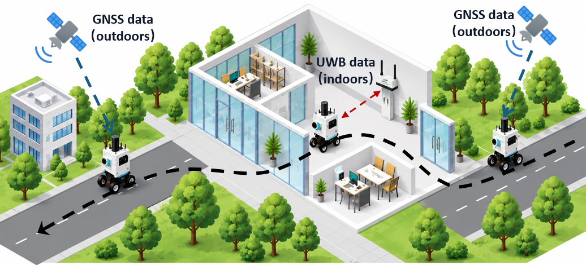
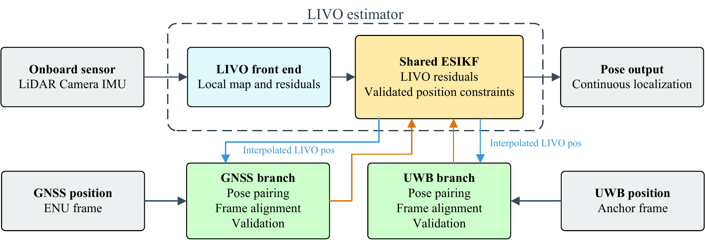
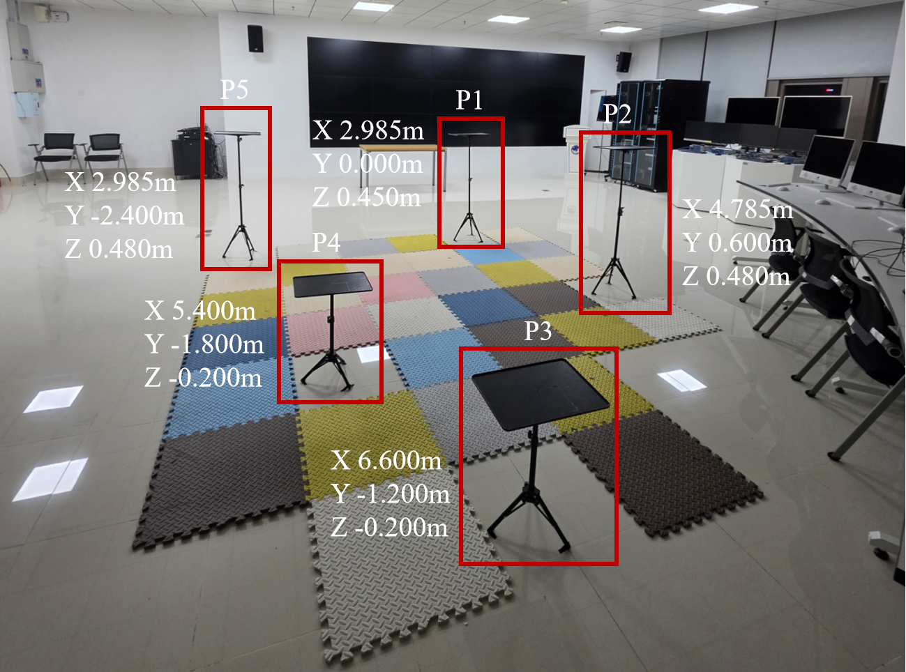
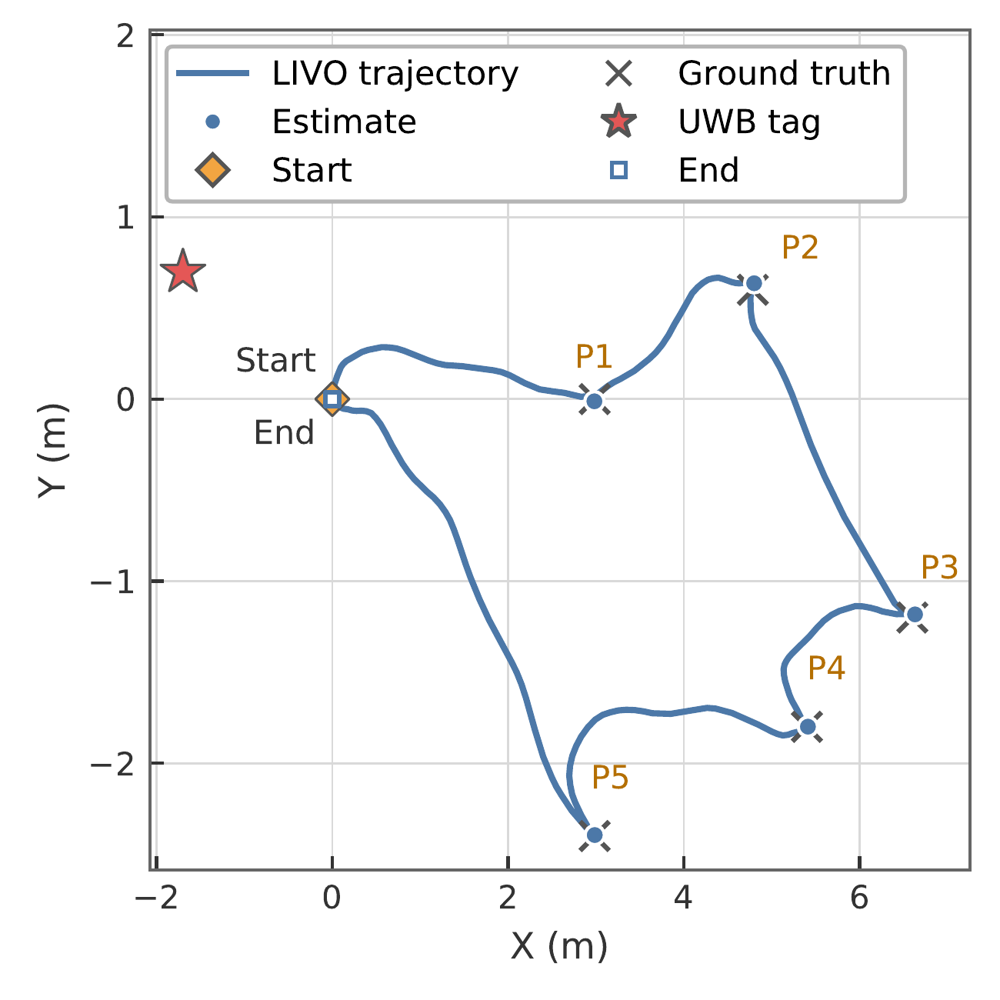
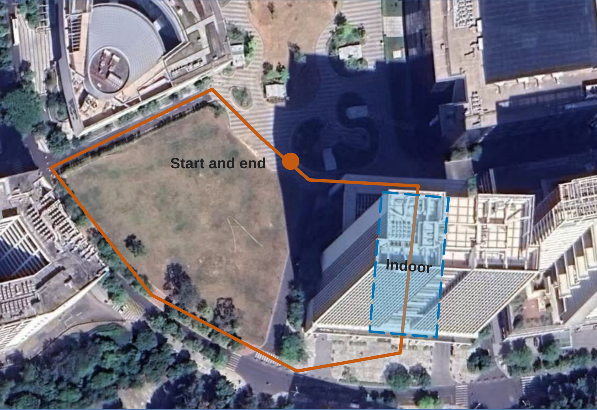
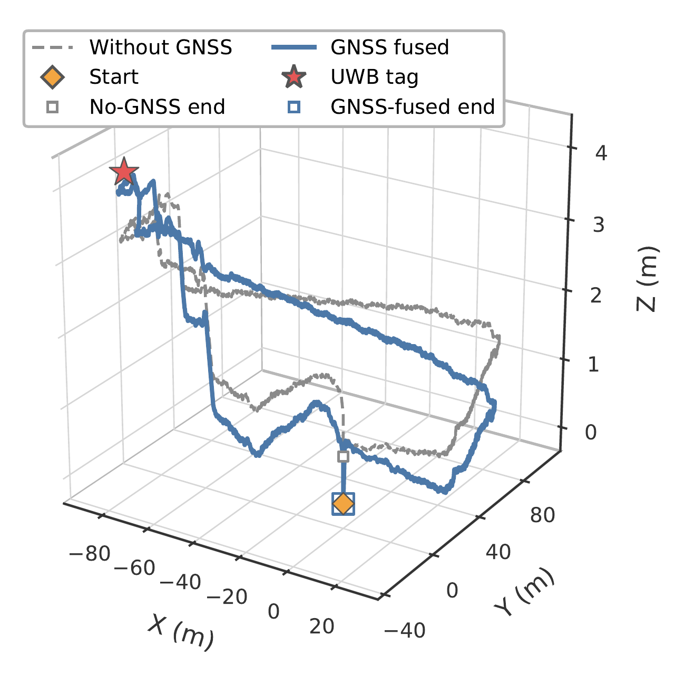
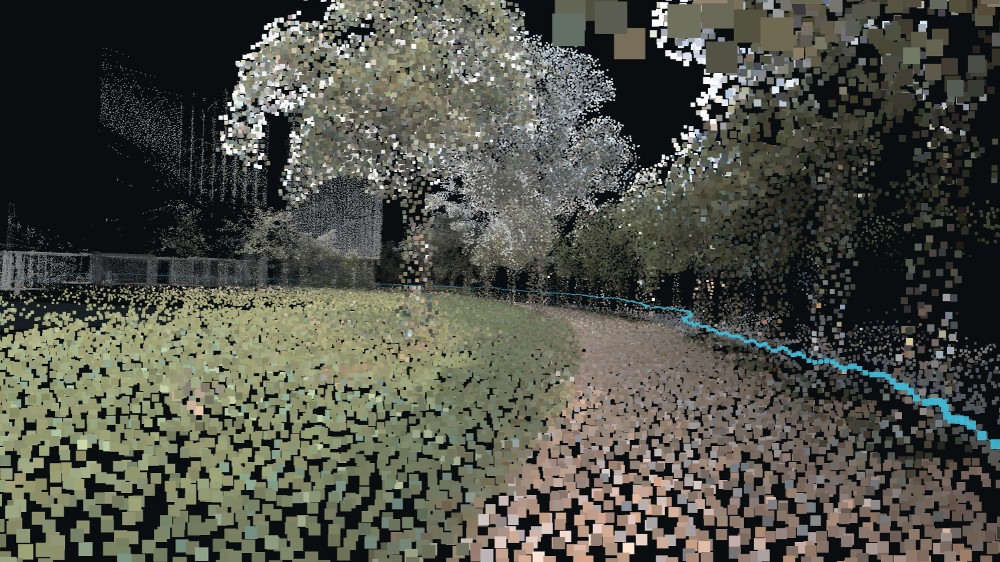
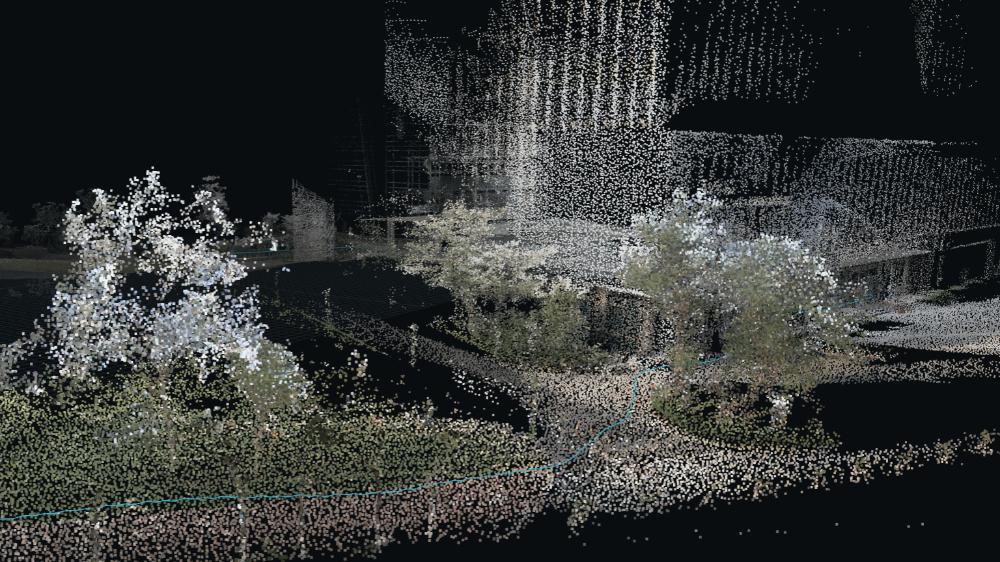
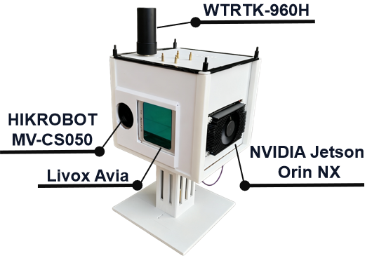
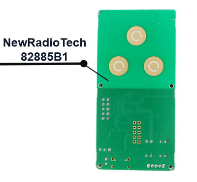

Online frame alignment
Estimate the GNSS and UWB transformations from timestamped position pairs collected during motion, avoiding prior frame calibration.
Harbin Institute of Technology (Shenzhen)
Seamless Indoor-Outdoor Localization with
GNSS, Single-Anchor UWB, and LIVO
Advisors Tianhao Liang & Tingting Zhang

The idea
A global navigation satellite system (GNSS) provides an absolute reference outdoors. A multi-antenna ultra-wideband (UWB) anchor provides a local position reference from range and angle measurements. LiDAR-inertial-visual odometry (LIVO) bridges intervals when neither is reliable.
SeamLoc brings them together through online coordinate frame alignment and uncertainty-aware fusion. Each external source contributes independently to a shared estimator as its measurements become available and pass validation.
Estimate the GNSS and UWB transformations from timestamped position pairs collected during motion, avoiding prior frame calibration.
Propagate alignment uncertainty into each position constraint and reduce the influence of inconsistent measurements.
Maintain one pose stream through changing coverage, with no hard environment switching or prior GNSS-UWB combination.

Our LIVO backbone is FAST-LIVO2. SeamLoc adds online frame alignment, validation, and external position fusion to its local estimation and mapping pipeline.
In motion
The video could not be loaded. Open the MP4 directly.
Measured in the field
Indoor checkpoint RMSE
Outdoor closed-loop route
Reduction in endpoint closure error
A handheld run follows a 20.32 m route through five independently measured checkpoints. The raw LIVO trajectory achieves a three-dimensional checkpoint root mean square error (RMSE) of 2.69 cm in its original start frame.


| Checkpoint | P1 | P2 | P3 | P4 | P5 | RMSE |
|---|---|---|---|---|---|---|
| Error (cm) | 1.26 | 3.95 | 3.98 | 1.33 | 1.21 | 2.69 |
The same recorded measurements are processed with GNSS feedback disabled and enabled after online frame alignment. On an approximately 433 m outdoor route, GNSS feedback reduces the three-dimensional return-to-start error from 0.701 m to 0.006 m. Both trajectories use the same local LIVO start frame.


| Metric | Without GNSS | GNSS fused | Reduction |
|---|---|---|---|
| Horizontal | 0.194 m | 0.006 m | 96.9% |
| Vertical | 0.674 m | 0.002 m | 99.7% |
| 3D | 0.701 m | 0.006 m | 99.1% |
Endpoint closure quantifies return-to-start consistency, not full-trajectory ground-truth accuracy. The indoor checkpoint and outdoor GNSS experiments evaluate distinct parts of the system.
Colored point clouds reconstructed by the fused system along the closed-loop route.


Built to carry
The prototype combines a Livox Avia LiDAR and its built-in inertial measurement unit (IMU), a HIKROBOT MV-CS050-10UM/UC camera with an 8 mm lens, a WTRTK-960H GNSS receiver, a UWB tag, and an NVIDIA Jetson Orin NX with 16 GB of memory.
A NewRadioTech 82885B1 multi-antenna UWB anchor supplies a local position reference through range, azimuth, and elevation measurements.


Project resources
Related open-source projects for local odometry, handheld sensing, and calibration.
Fast, direct LiDAR-inertial-visual odometry. The local estimation and mapping foundation adopted by SeamLoc.
hku-mars / FAST-LIVO2Efficient LiDAR-inertial odometry research and implementation.
hku-mars / FAST_LIOHandheld hardware, sensor drivers, and synchronization designs for LIVO acquisition.
xuankuzcr / LIV_handholdAn extrinsic calibration toolkit for LiDAR-camera systems.
hku-mars / FAST-CalibBuilt on shared research
We sincerely thank Chunran Zheng, Fu Zhang, and the FAST-LIVO2 contributors for making their research and implementation available to the community. Their work provides the LIVO foundation of SeamLoc. We also thank the maintainers of the related open-source projects above.